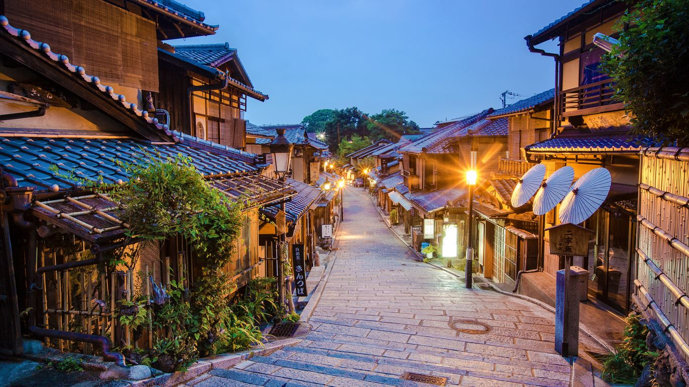
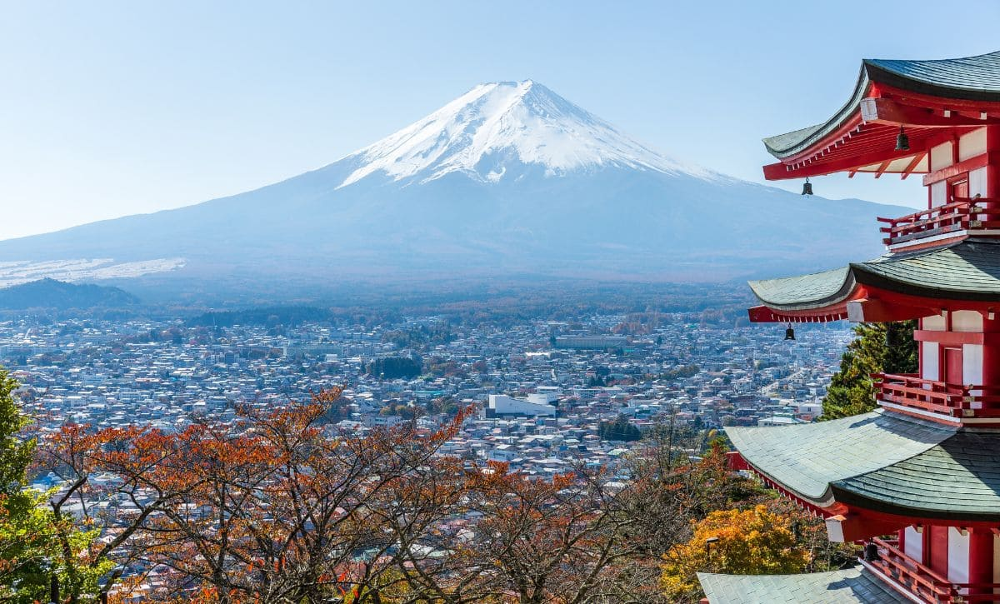

O que visitar
- Tokyo: bairros como Shibuya, Shinjuku e o mercado de Tsukiji.
- Quioto: templos como Fushimi Inari e o Pavilhão Dourado.
- Monte Fuji: vista icônica e trilhas ao redor.


Links para mais informações
Dicas para viajar
- Use trem-bala para se deslocar entre grandes cidades.
- Experimente a culinária local: sushi, ramen e takoyaki.
- Respeite regras de etiqueta em templos e transportes públicos.